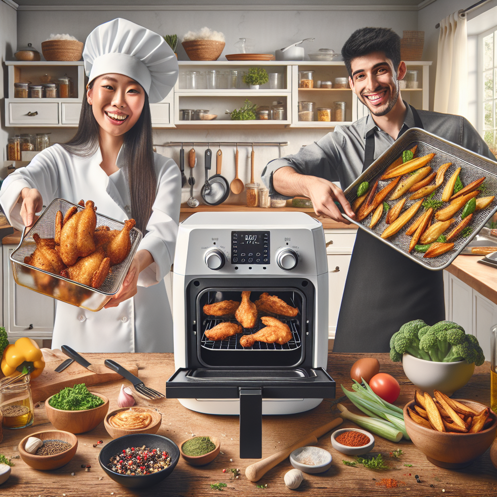

The art of cooking without using oil
In today's world, where more and more people are becoming health-conscious, the demand for oil-free cooking options is on the rise. As a chef, I have always been passionate about experimenting and finding healthier alternatives in cooking. One such method that has recently caught my attention is air frying.
Air frying is a cooking technique that uses hot air in combination with high-speed circulation to cook food. It eliminates the need for cooking oil, making it a healthier and low-fat cooking option. The air fryer works by circulating hot air around the food, crisping it up to perfection, without the use of excessive oil.
The future of air frying technology is promising. Companies are constantly innovating and coming up with new features and improvements to enhance the cooking experience. From touch screen controls to multiple cooking functions, air fryers are becoming more advanced and user-friendly. This opens up a world of possibilities for creative recipes that require no cooking oil.
One of my favorite recipes to make in an air fryer is crispy baked chicken. Instead of deep frying the chicken in oil, I simply marinate it with herbs and spices, then place it in the air fryer. The result is perfectly crispy and delicious chicken, without the added calories and cholesterol from oil. This method can be applied to various dishes, from French fries to onion rings and even desserts like apple fritters.
Not only does air frying provide a healthier cooking option, but it also saves time and energy. The quick preheating time and fast cooking process make air fryers ideal for busy individuals who want to enjoy a home-cooked meal without spending hours in the kitchen. Additionally, air frying produces less smoke and odor compared to traditional frying methods, making it a cleaner and more pleasant cooking experience.
As a chef, I believe in adapting to new cooking techniques and technologies that promote healthier living. Air frying is undoubtedly the future of oil-free cooking, and I am excited to continue exploring and creating delicious recipes using this innovative method. Whether you are a health-conscious individual or simply looking to switch up your cooking routine, I highly recommend giving air frying a try. You will be pleasantly surprised by the results and may never go back to traditional frying again.